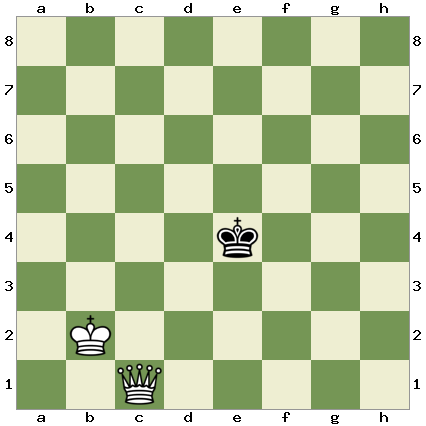

Endgame
This section will be focusing on the endgame. The engame is the stage of a chess match after most of the major pieces has been traded off. Ussualy either one player has a major piece, such as a rook or a queen, while the other player is left with just their king. At other times neither player has any major pieces and each side has only pawns, in which case each player races to promote their pawns to a higher piece, allowing them to checkmate the opposition. This section will be walking you through varius scenarios and strategies to help you during this section of the game.
Table of Contents
- Basic Checkmates- Ladder Checkmate
- Queen Checkmate
- King and Pawn vs King
Basic Checkmates
This section will discuss various basic checkmates which can be accompolished if during the endgame you still have major pieces such as rooks or queens. We will start by discussing the ladder checkmate, a checkmate which can be accomplished with either two rook, two queens, or a queen and a rook. In this guide I will be demonstrating the checkmate with two rooks, but it will work the same with any of the other combinations. This is an example starting position for this ckeckmate, two rooks lined up on adjacent files, and the enemy king at some other position on the board.
To complete the ladder mate in this scenario, you simply move your rooks down the board, alternating which one you move, like this
Each time you move a piece it puts the enemy king in check, and the other rook blocks all of its escape squares to one side, forcing it to move the other way. Eventually this will drive the enemy king to the opposite end of the board, where it can no longer escape further down the board and is checkmated. If the enemy king manages to move close enough to one of your rooks to capture it, simply move it to the other side of the board, where it is safe. An example of a full ladder checkmate is below.
Next we will discuss another important checkmate, the checkmate with a queen. This is one of the most common checkmates you will have to do in a chessgame, as it is quite common to go into the endgame with just a queen. We will start in the following position.
Now our goal will be to force the enemy king into one of the corners of the board. It doesn't matter which one you pick, but in this case we will be forcing it to the upper right corner. To do this we will move our queen each move so that it is a knights move away from the king. This forces the king to make a move towards the corner. For example, we will play this as our first move.
Now we can see that the king only has three moves available, any of which would move him towards one of the corners or edges. No matter which one he chooses we will once again be able to move our queen a nights move away from the king again to force it further towards one of the corners. We can continue this until the king is forced to one of the corners. However be careful to leave it at least two squares to move in the corner, as otherwise, if it could not move, the game would be drawn by stalemate.
Now that the king is confined to two squares in the corner, we can move our king over and use it to help deliver checkmate. After moving our king to the space 2 diagnol from the corner, we can move the queen into the space 1 diagnol front the corner, checkmating the enemy king.
King and Pawn vs King Engame
The king and pawn vs king engame occurs when one player is left with their king and one pawn and the other player has lost all of their pieces, leaving them with only their king. Here the side with the pawn aims to reach their opponents side with the pawn and promote, giving them a queen they can use to deliver checkmate. The side with just the king plays for a draw, aiming to capture his opponents pawn. In most situations, with proper play, the side with the pawn should be able to win.
There are two main variations of this engame. One occurs when the pawn is located on one of the edges of the board, either the A file or the G file, and the other occcurs when the pawn is not on one of these two files and is instead in the middle of the board. In either variation the side with the pawn will win if they are able to get their pawn to the end and promote it, and their opponent can force a draw if they are able to either capture the pawn (causing a draw due to insufficient material), or stop the pawn from promoting. The variant in which the pawn is on the side of the board is significantly more difficult to win for the side with the pawn, and in some cases, depending on the location of the enemy king, may be impossible to win and always result in a draw. If the enemy king is able to either capture the pawn, or make it to the any square in front of the pawn, then the game will result in a draw. Take this position as an example.
Here the enemy king has managed to occupy a square in front of the pawn, and as such, no matter what white does, black will be able to force a draw. For example, if white chooses to push their pawn forwards, this causes a draw by stalemate, as the black king has no squares to move to, but is not in check.
Alternativley, if white decides to move their king, black will be able to move forwards, directly in front of the pawn. This prevents the pawn from moving forwards and promoting.
So we can see that in this scenario, there is no way for white to win. In cases where the pawn is on one of the edges it is still sometimes possible for white to win. To do this, white must use their king to block their opponents king from entering a square in front of their pawn. For example, there is this position.
Here the white king is blocking the black hing from entering any of the squares in front of the pawn, which means white can push their pawn forwards and promote without black being able to block it.
Next we will discuss the version of this endgame in which the pawn is not located on one of the edges of the board. This position is winnable most of the time for the player with the pawn, but it is critical that the player makes the correct move. In this position the first order of buissness should always be to get your king directly in front of the pawn, as if the enemy king gets there they will be able to force a draw. So, as an example, in this position white should start not by pushing their pawn forwards, but rather by moving their king in front of the pawn.
From here we can see that the black king is directly in front of the white one, and it is black's turn to move. This is important and is known as "having the opposition." Without this the black player can still force a draw. For example, if black's king was located one square to the side, they would be able to move it directly in front of our king for our turn, in which case we would be forced to move our king away from the front of the pawn. However, if we have the opposition, black is forced to move their king away from in front of our pawn, in which case we can move our king into the space opened up by this.

Now, if black moves their king down the board towards our pawn, we are able to simply push the pawn forwards through the safe space created by our king.
Alternativley, if black moves their king up and back in front of our pawn, we can simply move our king back in front and regain the opposition, meaning they have to move out of the way again. This moves our king further up the board, which provides a protected area for the pawn to move through

This can than be continued until we have moved our pawn all the way up the board and can promote.
Coded By: Finn Cullen 2023